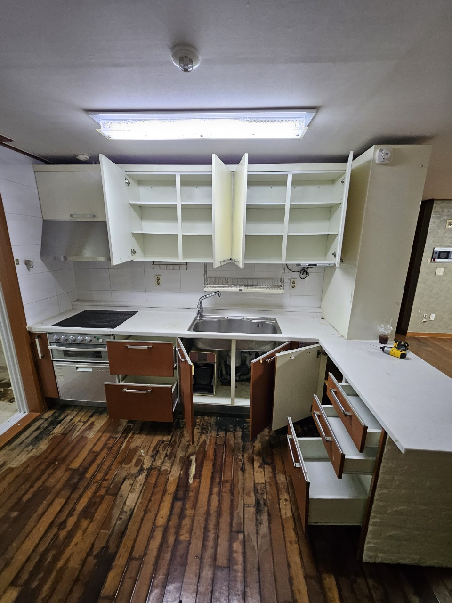
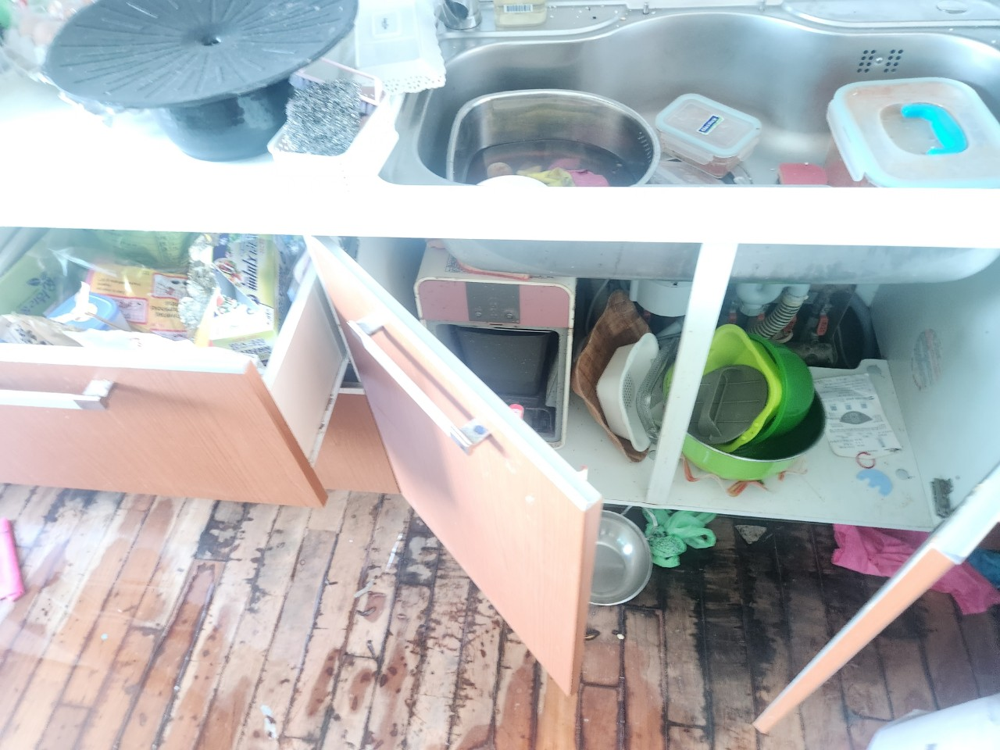
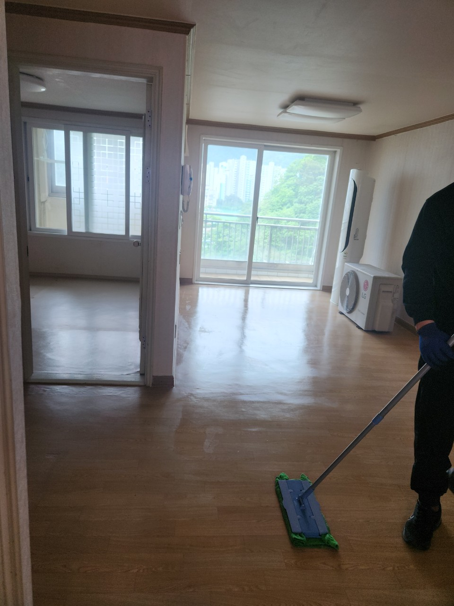

쓰레기집청소
방치된 생활폐기물과 정리하기 어려운 공간을 처리합니다.
안양 지역 방문 가능
안양 쓰레기집청소, 빈집정리, 가정폐기물처리, 이사폐기물처리, 폐업폐기물처리까지 현장 상황에 맞춰 빠르게 상담합니다.

LOCAL SERVICE
안양에서 생활공간이나 사업장을 정리하다 보면 예상보다 많은 폐기물이 발생할 수 있습니다. 오래된 가구, 사용하지 않는 생활용품, 이사 과정에서 나온 짐, 폐업 후 남은 집기류는 혼자 처리하기 어려운 경우가 많습니다.
장기간 방치된 생활폐기물은 악취와 위생 문제를 만들 수 있어 빠른 정리가 중요합니다. 현장 상황에 맞춰 분류, 운반, 상차를 함께 진행합니다.
매매, 임대, 리모델링 전 남아 있는 가구와 생활폐기물을 정리하면 다음 작업이 수월해집니다. 공간 상태와 폐기물 양을 확인한 뒤 작업 방향을 안내합니다.
이사 전후 버릴 물건, 오래된 가구, 생활용품, 대형폐기물 등은 한 번에 정리하는 것이 효율적입니다. 일반폐기물은 30만원부터 시작하며 실제 비용은 양과 현장 조건에 따라 달라집니다.
사무실, 매장, 창고 폐업 후 남은 집기와 폐기물은 종류와 양이 다양합니다. 차량 진입 여부, 층수, 엘리베이터 유무, 분리 작업 난이도에 따라 작업 계획이 달라집니다.
SERVICE
방치된 생활폐기물과 정리하기 어려운 공간을 처리합니다.
비어 있는 집이나 매매·임대 전 공간을 정리합니다.
가구, 생활용품, 대형폐기물을 수거합니다.
이사 전후 불필요한 짐을 한 번에 정리합니다.
업장 정리 후 남은 집기와 폐기물을 처리합니다.
PRICE
일반폐기물은 30만원부터 시작합니다.
정확한 비용은 폐기물 양과 현장 조건 확인 후 안내드립니다.DETAIL GUIDE
경기 안양 폐기물처리는 단순히 물건을 치우는 작업이 아니라 현장 구조와 폐기물 종류, 운반 동선, 차량 진입 가능 여부를 함께 확인해야 하는 작업입니다. 같은 폐기물이라도 아파트, 빌라, 단독주택, 상가, 사무실, 창고 등 현장 조건에 따라 작업 방식과 비용이 달라질 수 있습니다.
생활폐기물이 오랜 기간 쌓인 공간은 악취와 위생 문제가 함께 발생할 수 있습니다. 경기 안양 쓰레기집청소는 폐기물 분류, 포장, 운반, 상차까지 한 번에 진행하는 것이 중요합니다. 특히 혼자 정리하기 어려운 양이거나 엘리베이터 사용이 제한되는 현장은 작업 전 상담이 필요합니다.
빈집정리는 매매, 임대, 리모델링, 이사 준비 과정에서 많이 필요합니다. 오래된 가구, 침대, 서랍장, 생활용품, 잡동사니 등이 남아 있으면 다음 입주나 공사 진행이 늦어질 수 있습니다. 경기 안양 가정폐기물처리는 물건의 양과 종류를 확인한 뒤 적절한 차량과 인원을 배치해 진행합니다.
이사 전후에는 평소보다 많은 불필요한 짐이 나옵니다. 오래된 가전, 사용하지 않는 가구, 파손된 물품, 계절용품 등이 대표적입니다. 이사 일정에 맞춰 폐기물을 미리 정리하면 새 공간으로 이동하는 과정이 훨씬 수월해집니다.
매장, 사무실, 창고 폐업 후에는 업종에 따라 다양한 폐기물이 발생합니다. 책상, 의자, 진열대, 선반, 집기류, 포장재 등은 양이 많고 부피가 커 일반적인 배출만으로는 처리하기 어렵습니다. 경기 안양 폐업폐기물처리는 현장 확인 후 작업 인원과 차량을 정해 진행하는 것이 안전합니다.
일반폐기물은 30만원부터 시작하지만 실제 비용은 폐기물의 양, 층수, 엘리베이터 유무, 차량 진입 가능 여부, 분리 작업 난이도, 작업 시간에 따라 달라집니다. 사진 상담을 통해 대략적인 안내가 가능하며, 양이 많거나 현장 구조가 복잡한 경우에는 추가 확인이 필요할 수 있습니다.
LOCAL FAQ
일반폐기물은 30만원부터 시작합니다. 실제 비용은 폐기물 양, 층수, 엘리베이터 유무, 차량 진입 여부에 따라 달라집니다.
가능합니다. 생활폐기물 정리, 포장, 운반, 상차까지 현장 상황에 맞춰 진행합니다.
가능합니다. 전체 공간 사진, 폐기물 양, 건물 입구와 엘리베이터 여부를 함께 보내주시면 더 빠르게 안내할 수 있습니다.
매매, 임대, 리모델링, 이사 전후로 남은 가구와 생활폐기물을 정리할 때 필요합니다.
사무실, 매장, 창고, 소형 업장 등 다양한 현장 상담이 가능합니다. 집기류와 폐기물 양에 따라 비용이 달라집니다.
PHOTO
작업 전·중·후 현장을 단계별로 확인할 수 있습니다.


REVIEW
안양 현장에서 진행한 쓰레기집청소, 빈집정리, 가정·이사·폐업폐기물처리 작업후기를 확인할 수 있습니다.
작업 전·후 현장 사진과 정리 과정을 안양 작업후기 페이지에서 확인하세요.
사진을 준비해두시면 더 빠르게 안내받을 수 있습니다.